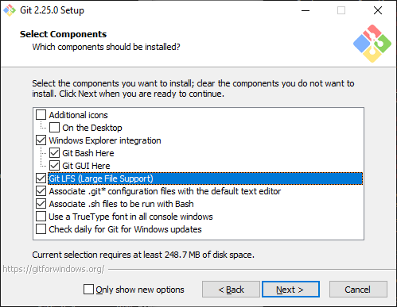
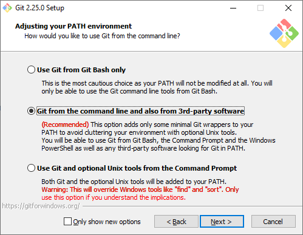
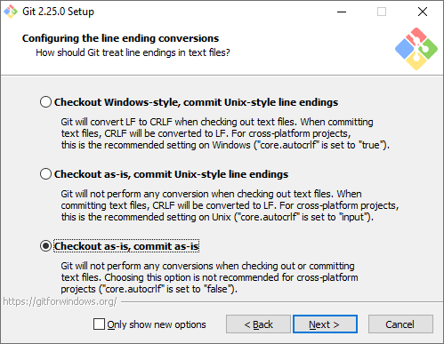

Build Environment
SBL build is supported on both Windows and Linux environments
Building on Linux
Supported environment: Ubuntu Linux 22.04 LTS
Install the following software:
GCC 9.4.0 or above
Python 3.8.10 or above
NASM 2.16.01 or above
IASL 20190509
LLVM (needed for UEFI payload build)
OpenSSL
Git
Build Tools Download - Ubuntu
Install required packages on Ubuntu:
$ sudo apt install -y build-essential python3 uuid-dev openssl gcc-multilib qemu-system git iasl nasm
Build using Dockers (Optional)
You can also consider Dockers containers to build SBL. See Miscellaneous: Dockers for more details.
Building on Windows
Supported environment: Microsoft Visual Studio 2019 or Microsoft Visual Studio 2022 Community Please ensure to install Dekstop Development with C++ along with Microsoft Visual Studio installation.
Install the exact versions (if specified) of the following tools to the designated directories:
Python 3.8.10 - C:\Python38
NASM 2.16.01 - C:\Nasm
IASL 20190509 - C:\ASL
LLVM (needed for UEFI payload build) - C:\LLVM
OpenSSL - C:\openssl
Git (ex. GitBash)
SBL Keys Generation
Generate SBL keys and this is pre-requiste before SBL build:
Generate SBLKeys:
python $(SBL_ROOT)\BootloaderCorePkg\Tools\GenerateKeys.py -k $SBL_KEY_DIR
Set of private and public keys would be generated for specified key sizes.
Set environment variable for SBL Key directory:
Linux: export SBL_KEY_DIR=<path to SblKeys directory>
Windows: set SBL_KEY_DIR=<path to SblKeys directory>
Note
In case a pre-signed OS Image is used, replace the public key that was generated by GenerateKeys.py (OS1_TestKey_Pub_RSAxxxx.pem) with the public key corresponding to the private key that was used to sign the image. Please refer Key Management section for details
Build Tools Download - Windows
Python 3.8.x 64 bit version.
https://www.python.org/downloads/windows/
Note
Add Python to the PATH
Python version 3.8.10 is the tested version.
Nasm 2.16.01
https://www.nasm.us/pub/nasm/releasebuilds/2.16.01/
Require: Install to C:\Nasm
IASL 20190509-64
https://acpica.org/sites/acpica/files/iasl-win-20190509.zip
unzip then copy files to C:\asl
Require: Install to C:\Asl
LLVM 15.0.7
https://github.com/llvm/llvm-project/releases/tag/llvmorg-15.0.7/
Require: Install to C:\LLVM
Note
Add an environment variable: CLANG_BIN=C:LLVMbin
Openssl (latest)
Download latest win64 version from https://wiki.openssl.org/index.php/Binaries)
Require: Install to C:\Openssl
Note
Set environment variable OPENSSL_PATH to openssl directory where openssl.exe is present. For example: set OPENSSL_PATH=C:\Openssl\bin
Git on Windows
Install Git or add its executable path in your PATH environment if already exists.
Here is GitBash as an example.
Download GitBash from https://git-scm.com
Below are RECOMMENDED options. For others, it’s okay to use default selected option.
Make sure “Git LFS (Large File Support)” is selected.
Make sure “Git from the command line…” is selected.
Make sure “Checkout as-is, commit as-is” is selected.
